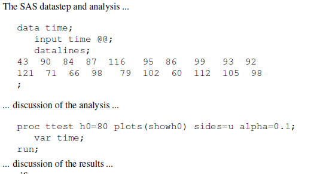
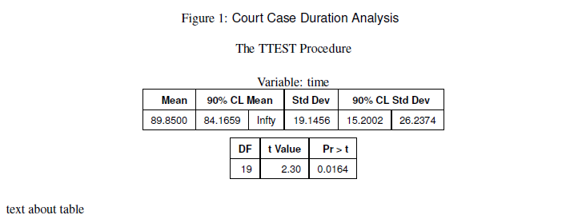
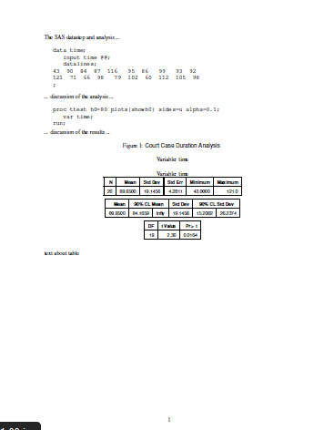
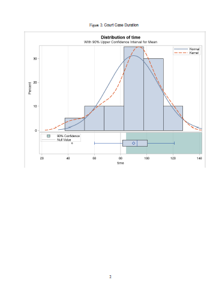
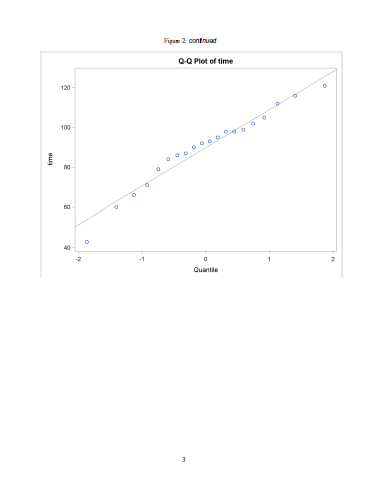
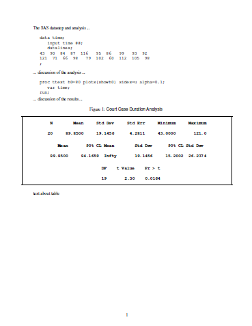

Overview
This short article shows how you can use StatRep to capture and display SAS-generated output to create dynamic documents. With the most recent release of the StatRep package, you can now create and display SAS-generated LaTeX output in your LaTeX documents.
The StatRep system for reproducible research was introduced at the 2012 SAS Global Forum, in this paper. You can download the package from the links given at the end of this article.
The StatRep package enables you to create dynamic documents using SAS and LaTeX. It is composed of one LaTeX package (statrep.sty) and a suite of SAS macros, (statrep_macros.sas) that work together to capture and display SAS output. This enables you to write all of your data, code, and discussion in a single source file (your LaTeX document); that file can be shared with others and you can be sure that the output others see is generated from the code you used to create the analysis. No more copying and pasting of code blocks!
Your document is processed in four steps:
- Write your LaTeX document using custom markup from the StatRep package.
- Compile the document with pdfLaTeX; this step generates a SAS program to capture the output needed in your document.
- Run that generated SAS program to produce the output.
- Recompile the document with pdfLaTeX; now your code and output appear in the final PDF document.
Configuration
There are several "hooks" in the StatRep configuration that you can set in order to make the package work with your preferences. These hooks are explained in detail in the User's Guide; see the section on customization and the installation instructions.
While the defaults have been carefully chosen, there are two settings that deserve some special consideration.
The statrep_macros.sas File
The location of the file statrep_macros.sas must be set so that the generated SAS program will function correctly. Set the location with the \SRmacropath variable in your statrep.cfg file.
If you do not set this variable, SAS will expect the macros to be in the current directory (the one that contains the program and your LaTeX document). Nothing wrong with that, just make sure the file is in that directory when you run the generated SAS program.
The SAS ODS Output Destination
When you download and install the StatRep package, the default ODS destination is the ODS Listing; (because the default value of the \SRdefaultdests configuration variable is listing). SAS-generated output is displayed as it appears in the listing window. You can alternatively have SAS create output as LaTeX tables. There are two ways to select SAS-generated LaTeX output.
You can modify the configuration in the
statrep.cfgfile to make the default the ODS StatRep LaTeX tagset by changing the value of\SRdefaultdeststolatex.Alternatively, you can leave the
\SRdefaultdestsconfiguration variable as it is and modify your\Listingtag in your LaTeX document. Specify the ODS destination on the\Listingtag itself, as in the example below, which sets thedest=latexoption.
If the global default \SRdefaultdests is set to latex, there is no need to specify it again on the \Listing tag.
In either case, whether you change the global configuration variable or add the dest= option to your \Listing tags, SAS will need access to the StatRep tagset in order to generate the output.
Bundled in the StatRep package is a SAS program that creates a new tagset base on the ODS LaTeX tagset. You create the tagset by running the included SAS program, statrep_tagset.sas.
The StatRep Tagset and Style
If you want your output to be generated in LaTeX format rather than the listing format, you first must create a special tagset for SAS to use. This is easily done--just run the included SAS program statrep_tagset.sas.
The User's Guide provides complete details on how to create SAS-generated LaTeX output. The main points are that you must create the statrep.tagset with the included SAS program, statrep_tagset.sas, and you must tell SAS to use the tagset when creating the output. You can run the tagset generation code each time you use StatRep or you can save the tagset. By default, the tagset is saved to the SASUSER.TEMPLAT item store. Full details on installing tagsets are available in this Usage Note
If you want to run the tagset generation code each time, you can change the way StatRep includes the macros. Your file statrep.cfg will change so the definition for \SRmacroinclude appears as follows:
\SRmacroinclude{%
\@percentchar include "statrep_tagset.sas" /nosource;
\@percentchar include "\SRmacropath" /nosource;
}
With this definition, the generated SAS program first creates the StatRep tagset before creating the output for your document.
Examples
In the examples that follow, the following document preamble, data step and proc step are used. Make sure you have already created the StatRep tagset, described above.
\documentclass{article}
\usepackage[margin=1in]{geometry}
\usepackage{statrep}
\begin{document}
The SAS datastep and analysis ...
\begin{Datastep}
data time;
input time @@;
datalines;
43 90 84 87 116 95 86 99 93 92
121 71 66 98 79 102 60 112 105 98
;
\end{Datastep}
... discussion of the analysis ...
\begin{Sascode}[store=myoutput]
proc ttest h0=80 plots(showh0) sides=u alpha=0.1;
var time;
run;
\end{Sascode}
... discussion of the results ...
The final PDF output from the preceding code looks like this:

In the document snippet above, the code creates a SAS data set time and invokes the TTEST procedure. The result is that all output created by the TTEST procedure is contained in an ODS document named myoutput as specified by the option store=myoutput.
So far, no output is displayed--the output that is displayed is determined by the \Listing and \Graphic tags that follow. This is how StatRep works: the code block generates all the output at one time and stores it in the ODS document so it can be used at any point in the document.
In the sections that follow, the \Listing and \Graphic tags request the ODS document to replay output objects into external files (on disk). When the final document is recompiled, pdfLaTeX embeds and displays those outputs.
Capture All Outputs as a Single Stream
In this example, the output tags make no request for specific outputs. When you make no explicit output selection, the Listing tag selects all tables and notes.
\Listing[store=myoutput, dest=latex,
caption={Court Case Duration Analysis}]{myouta}
text about table
The \Listing tag specifies:
- that output should come from the ODS document
myoutputwhich matches thestore=option on theSascodeblock - the output destination is
latex - caption for the output
- filename that contains the output is
lst/myouta.lst
The output from the above code looks like this:

When you run the generated SAS program, the SAS Log displays the ODS objects that are selected for replay. These outputs are displayed in your document as a continuous stream of output with page breaks handled automatically. That is, the output can go over a page break, with breaks allowed only between ODS objects. The SAS Log displays the following table that corresponds to the \Listing tag:
Objects Type Status Group
Ttest.time.PT Note Selected 1
Ttest.time.Statistics Table Selected 1
Ttest.time.ConfLimits Table Selected 2
Ttest.time.TTests Table Selected 3
Ttest.time.SummaryPanel Graph .
Ttest.time.QQPlot Graph .
Next, add some graphical output to your document with the \Graphic tag
\Graphic[store=myoutput,
caption={Court Case Duration}]{myoutb}
The \Graphic tag specifies
- that output should come from the ODS document
myoutputwhich matches thestore=option on theSascodeblock - caption for the output
- filename that contains the output is
png/myoutb.png
The Graphic tag selects all graphs by default. The SAS Log displays the following table that corresponds to the \Graphic tag:
Objects Type Status Group
Ttest.time.PT Note .
Ttest.time.Statistics Table .
Ttest.time.ConfLimits Table .
Ttest.time.TTests Table .
Ttest.time.SummaryPanel Graph Selected 1
Ttest.time.QQPlot Graph Selected 2
The final PDF document, which specifies the latex destination and uses the StatRep tagset, looks like this:



For comparison, the following screenshots show the final PDF document if you use the default listing destination. Only the tabular output has changed; the graphs are identical.

Capture Specific Outputs
You don't always want the output to displayed as a continuous, uninterrupted stream, so StatRep provides a flexible way to select ODS objects. In the following \Listing tag, the firstobj= option specifies that the output stream should begin with the ConfLimits object; the lastobj= option specifies that the output stream should end with the TTests object.
\Listing[store=myoutput, dest=latex,
firstobj=conflimits, lastobj=ttests,
caption={Court Case Duration Analysis}]{myoutc}
Suppose there were several objects in the ODS document between those two specified objects; they would all be included with this one \Listing tag.
StatRep provides many other methods of ODS object selection; see the User's Guide for details.
By specifying the same ODS document in different \Listing tags, you can show the outputs in any order or break them up into parts so you can discuss particular outputs. Your SAS code is only run one time--when the ODS document is created. You can replay the output from that ODS document in any order you like.
When you run the generated SAS program, the resulting SAS Log shows that the output objects ConfLimits and TTests are selected.
Objects Type Status Group
Ttest.time.PT Note .
Ttest.time.Statistics Table .
Ttest.time.ConfLimits Table Selected 1
Ttest.time.TTests Table Selected 2
Ttest.time.SummaryPanel Graph .
Ttest.time.QQPlot Graph .
The \Graphic tag uses the objects= option to specify that a single graph is to be captured and displayed, the qqplot object. Typically, the objects= option contains a space-separated list of ODS objects; in this case however, only one plot is selected.
\Graphic[store=myoutput,
objects=qqplot,
caption={Court Case Duration}]{myoutd}
The log shows that only the QQPlot object is selected.
Objects Type Status Group
Ttest.time.PT Note .
Ttest.time.Statistics Table .
Ttest.time.ConfLimits Table .
Ttest.time.TTests Table .
Ttest.time.SummaryPanel Graph .
Ttest.time.QQPlot Graph Selected 1
Summary
This article provides a couple of simple examples that show you how to get started with StatRep and generate LaTeX output with SAS. The User's Guide also provides simple examples, but includes more in-depth, advanced usage.
You can download the package from:
Do you have an example you'd like to see or a question about StatRep? Leave a comment!